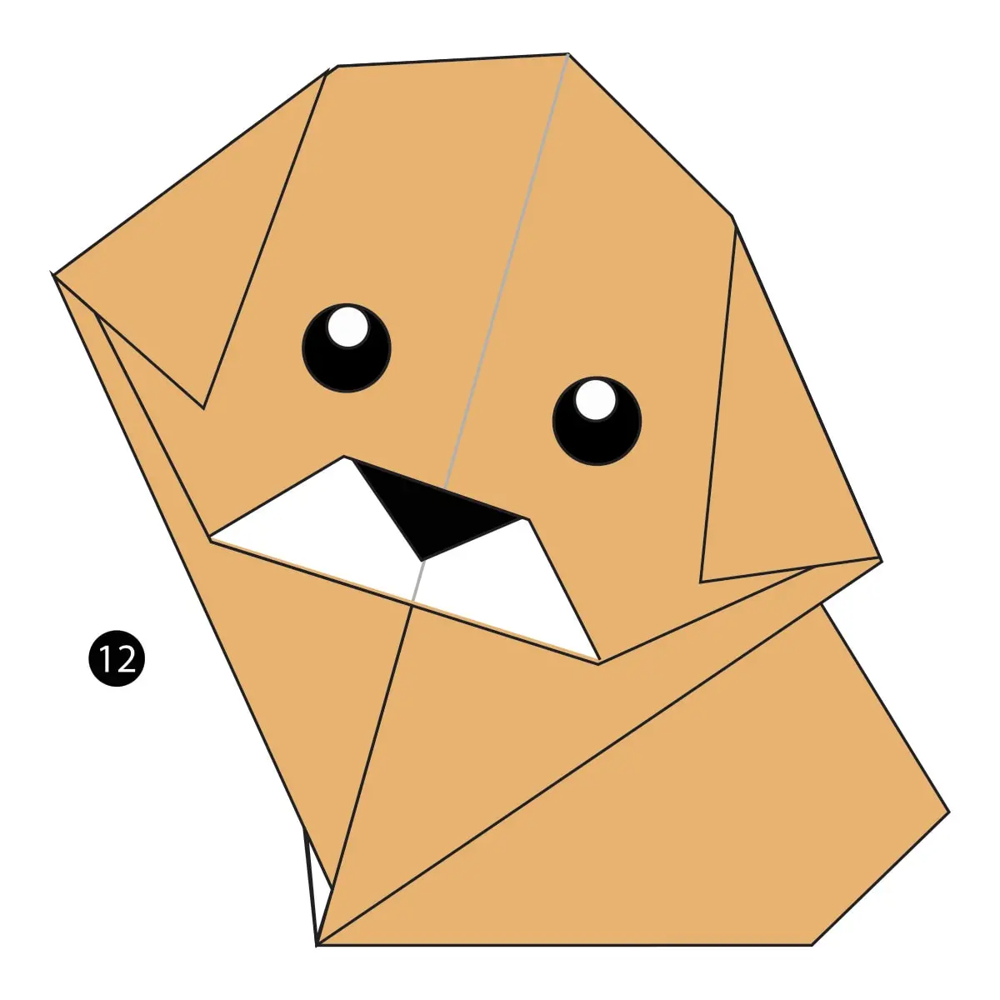

Imtresting Facts about chameleon
- chameleon are reptiles that are part of iguana suborder
- changing skin color is important part of communicaton among chameleon
- Most chameleon have a prenshile tail that they use to wrap around tree branches

Intresting Facts about Pigeon
- pigeon are incredbly complex and intelligent animals
- Pigeon are reowned for thier outstandind navgational abilities
- pigeones have excellent hearing abilities

Intresting Facts about camel
- Camels's ears are furry
- camel cam move easily across the sand because of its speacily desinged feet
- When they find water, they will drink as much as possible

Intresting Facts about teddy-bear
- Teddy bears got their name from the story that Teddy Roosevelt refused to shoot a bear cub while on a hunting trip in 1902.
- The Oxford English Dictionary dates the first use of the term teddy bear to 1906.
- The official term for a teddy bear collector is an ‘arctophile’.

Intresting Facts about panda
- They have great camouflage for their environment. ...
- Their eyes are different to normal bears. ...
- Cubs are well protected in their first month. ...

Intresting Facts about cicada
- Cicadas Live on All Continents Except Antarctica. ...
- They're Not Locusts. ...
- They Have One of the Longest Insect Life Spans. ...
Intresting Facts about frogs
- There are over 4,700 species of frogs!
- Every year that a frog goes into hibernation, a new layer of bone forms.
- Many frogs can jump 20 times their own height.

Intresting Facts about dogs
- Their sense of smell is at least 40x better than ours. ..
- Some have such good noses they can sniff out medical problems. ...
- Some dogs are incredible swimmers. ...